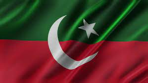

إِيَّاكَ نَعْبُدُ وَإِيَّاكَ نَسْتَعِينُ
PTI OFFICAL
Party Flag

Election Symmbol
PAKISTAN Tehreek-e-Insaf
The Pakistan Tehreek-e-Insaf (PTI; Urdu: پاکستان تحريکِ انصاف or پی ٹیآئی, lit.('Pakistan Movement for Justice')
is a centrist political party in Pakistan. It was founded in 1996 by the Pakistani cricketer-turned-politician IMRAN KHAN.
IMRAN KHAN INSTA ACCOUNT
The PTI is one of the three major Pakistani political parties alongside the Pakistan Muslim League–Nawaz (PML–N) and the
Pakistan Peoples Party (PPP), and it is the largest party in terms of representation in the National Assembly since the
2018 Pakistani general election. With over 10 million members in Pakistan and abroad, it claims to be Pakistan's largest
party by primary membership as well as one of the largest political parties in the world.
PAKISTAN Tehreek-e-Insaf
|
PUNJAB
|
Sindh |
Balochistan |
GB |
KPK |
National Assembly |
| 178
| 30 |
7 |
22 |
95 |
156 |
If you want to become a part of PTI TIGER FORCE
Enter your details